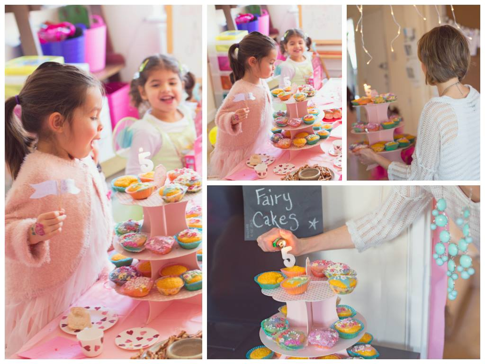

Family
London Birthday Photography
13 March 2014

Several weeks ago I had the pleasure of photographing a very special little girl’s 5th birthday party. I knew the theme would be “fairy princess” but I had no idea how “all-out” the supermom behind this idea would go, and let me just tell you–no little detail went undone!! When I saw the setup I knew immediately this would be a very magical party but I almost squealed when the first little guest arrived dressed in her own fairy princess outfit with wings!
After a brief introduction, the little ladies made their way around 4 different stations–fairy treasure bags decorating, fairy cake decorating, fairy wands making, a fairy beauty parlor, and after all that and a quick game of pass the parcel, the most adorable fairy feast. I don’t want to overwhelm anyone with image overload but there were way too many adorable shots to post just 10, so I decided to create a handful of collages for this post instead.
Many of the images are cropped a bit differently than my final edits for the purpose of fitting them into the photo montages–but hopefully you get the idea anyway :)
When I was greeted by the miniature fairy at the door to the party, I couldn’t help but smile.
The little fairies did a surprisingly excellent job at decorating the cupcakes, and I am kind obsessed with all of their little pig tails–so cute!!
Glitter nail polish and tattoos. The chubby little fingers clutching the nail polish bottle in the bottom left picture cracks me up!
The birthday fairy makes a birthday wish.
And of course the fairy feast including a sparrow’s nest, ladybird biscuits, glitter jelly cups, fairy fruit wands, and fairy buns. There was also “sugar & spice for the fairy elders” although that isn’t pictured here!